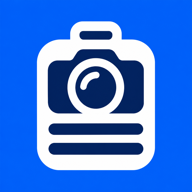

사진과 작업 설명
현장 사진에 날짜·위치·공종·작업 내용을 함께 기록합니다.

Felidia Site Photo Board현장 기록을 위한 사진 도구
사진대지보드판은 공사 현장 사진에 작업 정보를 기록하고, 사진대지로 정리하는 Android 앱입니다.
Google Play에서 보기 개선판 미리보기정식 출시 전 예시 사진으로 실행되는 미리보기입니다. 입력한 기록은 이 브라우저에 저장됩니다. 한국어·영어·일본어·중국어 간체·번체·아랍어·스페인어·프랑스어 메뉴를 선택할 수 있습니다.
현장 사진에 날짜·위치·공종·작업 내용을 함께 기록합니다.
기록을 사진대지 이미지로 저장하고 필요한 사람에게 직접 공유합니다.
백업·복원, A4 2·3·4장 PDF 보고서, 사진 비교, 음성메모와 다국어 출력을 개선하고 있습니다. 개선판은 아직 정식 출시 전입니다.
문의할 때 기기 모델, Android 버전, 앱 버전과 문제가 생기는 순서를 알려주세요. 현장 사진이나 개인정보는 꼭 필요한 경우에만 보내주세요.
rlqls4112@gmail.comPhoto tools for site records
Site Photo Board (사진대지보드판) is an Android app for adding work details to construction photos and arranging photo boards.
View on Google Play Try the update previewA preview with generated sample photos. Records you add stay in this browser. Choose English, Korean, Japanese, Simplified Chinese, Traditional Chinese, Arabic, Spanish or French in Settings.
Record the date, location, work category and description alongside site photos.
Save photo board images and share them with the people you choose.
Improvements include backup and restore, A4 reports with two, three or four photos per page, photo comparison, voice memos and multilingual text export. The update preview supports eight interface languages. The Android update has not been released yet.
Please include your device model, Android version, app version and the steps that caused the issue. Send site photos or personal information only when necessary.
rlqls4112@gmail.com